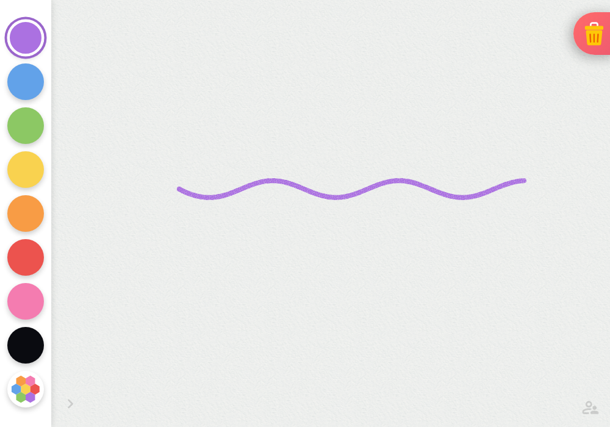
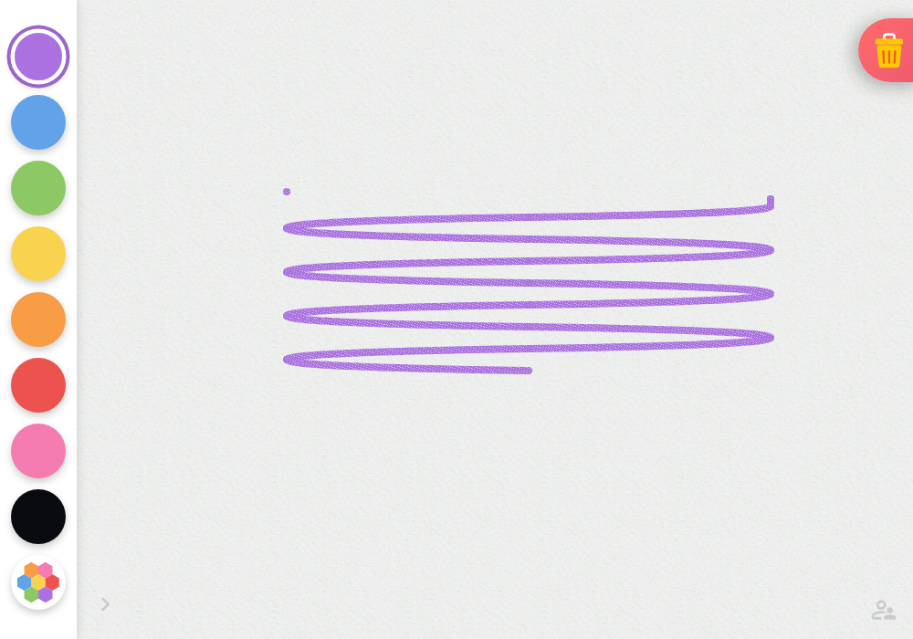

Blue-noise crayon
Actual Splotch canvas captures. A seeded, fine tooth keeps the first pass visibly waxy; a second same-colour pass shifts the tooth phase and fills the lighter pores without darkening or changing hue.


Actual Splotch canvas captures. A seeded, fine tooth keeps the first pass visibly waxy; a second same-colour pass shifts the tooth phase and fills the lighter pores without darkening or changing hue.

